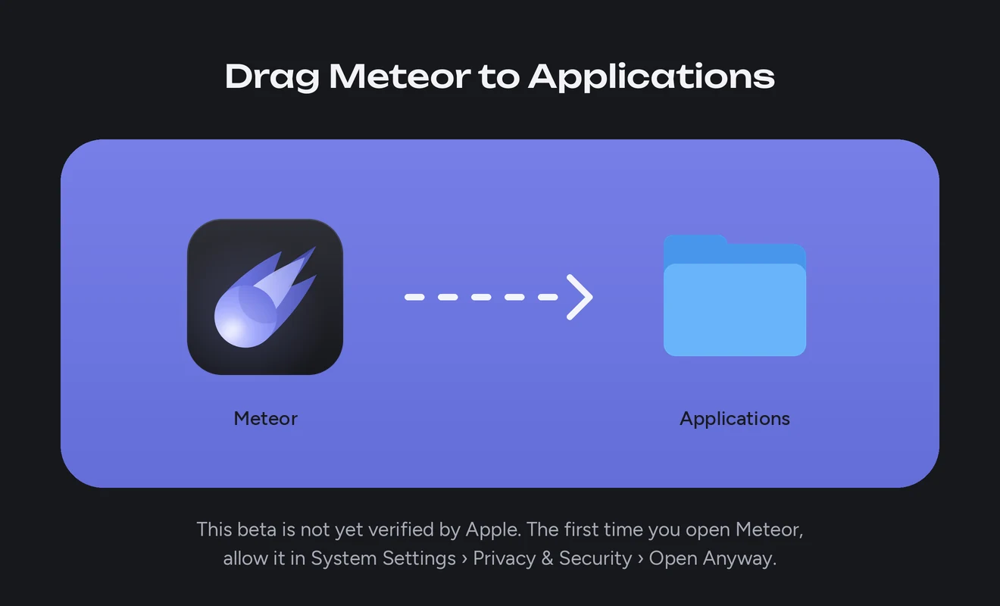

Windows
- Windows 10 or 11, 64-bit
- Mouse, pen or touch
If Windows says it protected your PC, choose More info, then Run anyway. Install help
Meet your next creative tool
Pick your platform and bring an idea. All features are unlocked while Meteor is in beta, with no account to create.
If Windows says it protected your PC, choose More info, then Run anyway. Install help
Open the disk image and drag Meteor to Applications. First launch in 3 steps
Open the file on your tablet and allow installs from your browser when asked. Install help
Extract it and run meteor/embroidream. Install help

Open meteor-macos.dmg from your Downloads. In the window that opens, drag Meteor onto the Applications folder.
Open Meteor from Applications or Launchpad. macOS says it could not verify Meteor, because the beta is not yet notarized by Apple. Choose Done.
Open System Settings, then Privacy & Security. Scroll to Security, choose Open Anyway beside Meteor, and confirm. From then on Meteor opens like any other app.
On macOS 14 or earlier, you can Control-click Meteor in Applications instead, then choose Open twice. To update, drag the new Meteor to Applications and choose Replace. Your designs stay.
iPhone and iPad are not supported yet. All versions and release notes · Report a problem
Need a hand getting started?
Read the FAQMade for your machine
Pick your Brother machine in Meteor. Hoops, sizes and the design check follow it, so a file never asks for more than your machine can sew.